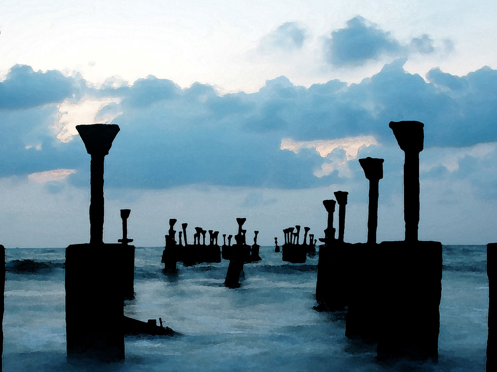

KOZHIKODE
Kozhikode, also known in English as Calicut, is a city along the Malabar
Coast in the state of Kerala in India. It has a corporation limit population of 609,224 and a metropolitan
population of more than 2 million, making it the second largest metropolitan area in Kerala and the 19th largest
in India.Kozhikode is classified as a Tier 2 city by the Government of India.
It is the largest city in the region known as the Malabar and was the capital of the British-era Malabar
district. In antiquity and the medieval period, Kozhikode was dubbed the City of Spices for its role as the
major trading point for Indian spices.It was the capital of an independent kingdom ruled by the Samoothiris
(Zamorins). The port at Kozhikode acted as the gateway to medieval South Indian coast for the Chinese, the
Persians, the Arabs and finally the Europeans.According to data compiled by economics research firm Indicus
Analytics in 2009 on residences, earnings and investments, Kozhikode was ranked the second-best city in India to
live in.
In the 14th century, Kozhikode conquered larger parts of central Kerala after the seize of
Tirunavaya region from Valluvanad, which were under the control of the king of Perumbadappu Swaroopam (Cochin).
The ruler of Perumpadappu was forced to shift his capital (c. CE 1405) further south from Kodungallur to Kochi.
In the 15th century, the status of Cochin was reduced to a vassal state of Kozhikode, thus leading to the
emergence of Kozhikode as the most powerful kingdom in medieval Malabar Coast.During the 15th century
Kalaripayat was important in the history of Malabar, some warriors lived, most notably puthooram veettil Aromal
Chekavar and his sister Unniyarcha who were chieftains of martial arts.
GALLERY



 BACK TO HOME
BACK TO HOME